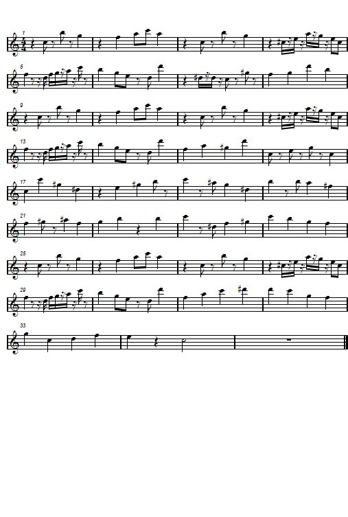

Piezas propias
Cada composición incluye partitura y reproductor de audio, escritas y maquetadas con MuseScore.

Variaciones en Fm
Fue mi primera composición basada en el minimalismo como punto de partida, inspirada en compositores como Philip Glass, Steve Reich y Hans Zimmer. De todas mis obras, fue la primera que realmente me despertó sentimientos al escucharla.

Música de batalla para videojuego
Composición orquestal para banda sonora de videojuego, escrita para orquesta completa (maderas, metales, timbales y cuerda). Progresión armónica que combina acordes diatónicos y adiatónicos para generar tensión dramática.

Música de exploración para videojuego
Composición para flauta, clarinete en Si♭ y piano, pensada como música de exploración de gameplay. Textura ligera y melódica que acompaña el ritmo pausado de la exploración.

Música de cinemática para videojuego
Composición para cinemática. Progresión armónica en Do♯ menor con acordes de paso adiatónicos que aportan tensión dramática a la escena.

Primera composición
Fue la primera canción que compuse al aprender teoría musical.

Arreglo del tema: No time to die
Arreglo para cuarteto de cuerda (violín, viola, violonchelo y contrabajo) y piano de "No Time to Die". Reescritura instrumental de una obra existente, adaptada para formación de cámara.